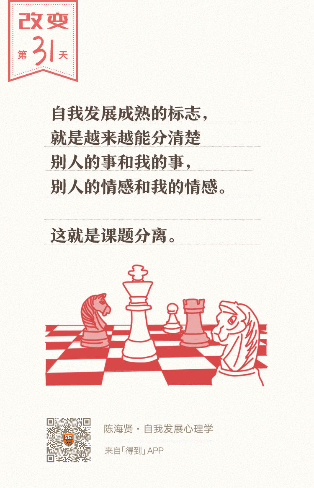

欢迎来到《自我发展心理学》。
你好，我是陈海贤。
在前面的课程里，我们讲了关系的混淆如何影响自我发展。我们分别讲了感觉的混淆、责任的混淆，以及关系混淆带来的后果——关系的纠缠。
那么，知道了不健康的关系给我们带来的危害后，你肯定想知道怎么建立健康的关系。
从这一讲开始，我们会花两节课的时间聊聊这个问题。这一讲，我们就来说说处理人际关系的一个基本原则——课题分离。
首先，我们来思考一下，我们为什么会有人际关系的烦恼呢？
其实主要的根源就是：分不清什么是别人的事，什么是我的事。
一个人如果分不清什么是自己的事，什么是别人的事，那他就很容易变得敏感内向，容易受他人情绪的影响，活在别人的评价和期待中，把别人的期待变成自己的期待，把别人的情感当做自己的情感。
而自我发展成熟的标志，就是越来越能分清楚别人的事和我的事，别人的情感和我的情感。自我的边界，就是通过这种区分确立起来的。这就是课题分离。
课题分离是著名心理学家阿德勒（Alfred Adler）提出的一个理论，指的就是要想解决人际关系的烦恼，就要区分什么是你的课题，什么是我的课题。我只负责把我的事情做好，而你也只负责把你的事情做好。
对于评价这是谁的事情，也有一个简单的准则：那就是，看行动的直接后果由谁来承担。
课题分离解决人际难题
既然说课题分离是人际关系的基本原则，那么它有什么作用呢？
其实，很多让人头疼的人际关系难题，都可以用课题分离的思路来解决。让我来举三种典型的难题。
第一个难题：很多人不知道怎么表达自己的需要。
比如：
- 室友太吵了，我们不知道该怎么说；
- 朋友借了我们几百块钱忘了，我们不知道该不该要；
- 同事抢了我的功劳，不知道该怎么表达不满。
表达需要之所以困难，是因为我们总是依据想象中别人的回应和看法来决定我们应不应该表达，而不是根据我们自己真实的需要。
如果我们在以往的人际关系中遭到过很多拒绝，那会让表达需要变得更加困难。
可是，从课题分离的角度思考，这件事就变得简单了：表达我们的需要是我们自己的课题，而别人会接受还是会拒绝，那就是他们的课题了。
你不能把自己变成一个探测他人需要的敏感雷达，而看不到自己的需要。需要的正当性，不是通过想象别人的反应来确认的，而是通过我们自己的表达来确认的。
也许别人不一定能满足我们的需要，可是“表达需要”本身也是一种需要，至少这种需要，我们是可以自己来满足的。
第二个难题，是很多人不知道该怎么拒绝别人。
我有个朋友是个老好人，同事有什么事，总是找他帮忙。
有些事他并不乐意做，可总也不好意思拒绝。这样，他就变成了公司里的救火队员。可是，他内心又有很多的抱怨，经常觉得同事利用了他。
我就问他，“如果你拒绝别人，你会担心什么？”
他说：“我担心别人说我小气，这么点忙也不肯帮。”
同样用课题分离的思路来理解，这件事也会变得清晰一些。
别人提出请求，那是别人的事，他遇到困难，应该提出请求。可是你接受还是拒绝，那是你的事，你也不能因为自己拒绝有困难，就抱怨别人不该提请求。
如果你拒绝了，别人怎么评价你，那又是别人的事了。
它既不是你能控制的，也不是你能剥夺的。别人怎么评价你，不应该成为你的行事准则。
第三个难题，我们总是会因为害怕失败而不去尝试。
可是害怕失败害怕的是什么呢？说到底，还是害怕别人的评价。
我有一个朋友，经常担心自己在公司表现不好，担心HR会给他的绩效打不合格，因为他们公司实行的是末位淘汰制。所以他很焦虑，甚至都没法好好工作了。
我跟他开玩笑说：“我觉得HR应该分一份工资给你。你一直都在操心HR的事情，却没有好好做你自己的工作。”
我的一些来访者也会担心HR因为看不上他们的简历，而不敢去投简历找工作。
我也会跟他们说：“你其实也不是觉得自己不行，你是觉得自己很行。至少是比HR专业。因为你相信自己对自己的判断比HR更准确。
如果你想要找一份工作，你就应该去投简历。你把简历投了，你的课题就完成了。
判断你合格不合格，那是HR的课题，如果他觉得你资历不够，那你也别难过，毕竟这是他们的工作。可是如果HR觉得你还不错，那你也别质疑人家的决定，哪怕你觉得自己很糟。”
亲密关系更需要课题分离
如果说普通的人际交往可以遵循课题分离的原则，那家人和爱人之间的亲密关系呢？其实也可以遵循相似的原则。
只不过，就像我们在前面依恋理论里讲到的，因为我们和家人之间的情感联系更加紧密，我们对家人的感受也更加敏感，所以用课题分离的原则来处理我们和家人的关系会更加困难。
在咨询室里，我经常遇到的一个难题是父母和成年子女的情感纠缠。
我曾遇到一对母女，爸爸出门在外做生意，很少回家。妈妈一直把教育女儿成材当做唯一的人生目标。
为了陪女儿读书，还把自己的房子卖了，租在女儿的高中旁。
后来女儿长大了，马上要出国读书了，她就对女儿各种控制。跟着女儿去参加同学会；女儿回家稍晚一些，就打很多电话问。女儿也很逆反，母女俩经常吵架。
我问妈妈：“你为什么把女儿看得那么紧？”
妈妈说了一堆，比如“我女儿自我管理能力不行”，“我女儿心智还不够成熟”。说了这么多，她其实一直想说“我女儿还小，还需要我。”
我就问女儿：“你还这么需要妈妈来管你吗？”
女儿在旁边使劲摇头。看到女儿摇头，妈妈有些黯然神伤。
我跟她说，我看过一个电影，想讲给你听。
电影讲的是有个女人出生在一个非常封建的家庭里，她爱上了一个男人，但还是没能力突破家庭的束缚，最后嫁给了一个完全不爱的男人。
嫁给那个男人以后，他们有了一个儿子，她就把所有的注意力都放到了儿子身上。
慢慢的，儿子长大，要离家了。
临走的时候，儿子就问妈妈：“妈妈，我走了，你会孤单寂寞吗？孤单的时候谁来安慰你呢？”
妈妈就说：“你走了，我会孤单，会寂寞，也可能找不到人安慰。可是我不要把我自己的困难，变成你不能出去的理由。”
我跟那个妈妈说：“现在，你也面临着这样的选择了。你会怎么选择呢？”
她沉默了很久，说：“我一直觉得，我已经把我最好的东西都给我女儿了。现在我知道了，原来我自己的爱就变成了一个负担。我当然是选择退一步了。 ”
这是讲给父母听的故事，可是如果我的来访者是成年子女，我就会讲另外的故事了。
我有一个来访者，毕业的时候，妈妈就托关系帮他在自己的单位找了一份工作。
现在工作两三年了，和父母住一起，妈妈还是很照顾他，每天帮他做早饭，关心他的日常起居。如果他晚一点回来，妈妈就会打电话问他。
他说：“我很讨厌妈妈这么照顾我，我又不是小孩子了。”
如果他听过刚刚的故事，也许他会说：“老师你说得太对了，我怎么就没有一个懂得放手的妈妈呢？”
他想要换个城市工作，可是不知道该怎么面对妈妈的失望。
我说：“她不让你走吗？”
他说：“她倒是没说什么。可是我一看她的眼神，就知道她不能安安心心让我走的。”
我说：“如果是这样，那你其实不是讨厌她照顾你，你是在要求一个更大的照顾。你要她放弃对你的关照，自动离开。
可是你知道吗？妈妈总是很爱子女的，这并不是什么错。离家是你的课题，不是妈妈的课题。你应该自己去争取，而不是埋怨她没有主动让你离开。否则，这就是要求一个更大的照顾了。”
他想了一会说：“是的，那是我自己的事。”
这两个对称的故事，看起来矛盾，但其实说的都是同样的道理：怎么在情感的纠缠中，分清楚什么是我们自己的事情，并把自己的事情做好。
课题分离是没有条件的。如果我们一定要别人先做什么，我们自己才能做什么，那这就不是课题分离了。
说到这里，我想把这节课的内容和前面的内容做一个联系。
还记得第二章的时候我们所讲的控制的两分法吗？控制你能控制的事情，而不妄图控制你不能控制的事情？
课题分离，就是人际关系中的控制两分法。把我们能做的事做好，因为归根到底，每个人都只能做好自己的事情。
而如果我们真的把自己的事情做好了，把别人的事情留给别人操心，那也许我们就不会担心别人的评价，那些来自人际关系的烦恼和羁绊，也许就不会那么让我们困扰。
总结一下，这节课我们讲了处理人际关系的一个基本原则——课题分离。
讲了课题分离的内涵以及遵循这个原则能带来什么好处：它既能帮助我们解决普通人际关系的难题，也能处理亲密关系之间的难题。
下一讲，我们会介绍一种让我们既保持独立，又走向合作的沟通方法。
我们下一讲再见。
